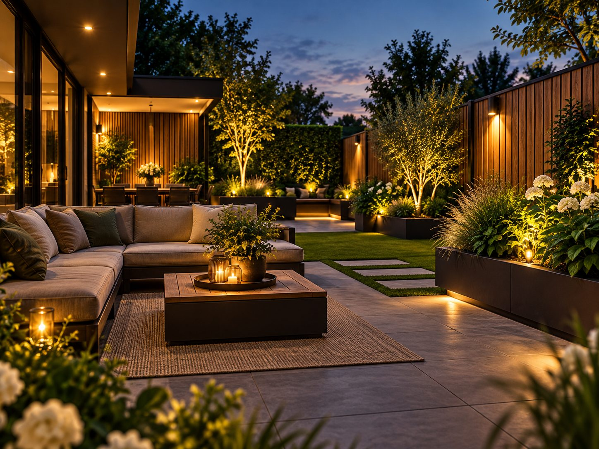
Sealcleaning Groenonderhoud & Aanleg
Groenonderhoud en tuinaanleg in Dordrecht
Tuinonderhoud, snoeiwerk, schuttingen, bestrating, hogedrukreiniging en kunstgras. Bekijk rechts een voorbeeldtuin in 3D en vraag een offerte aan voor uw eigen tuin.
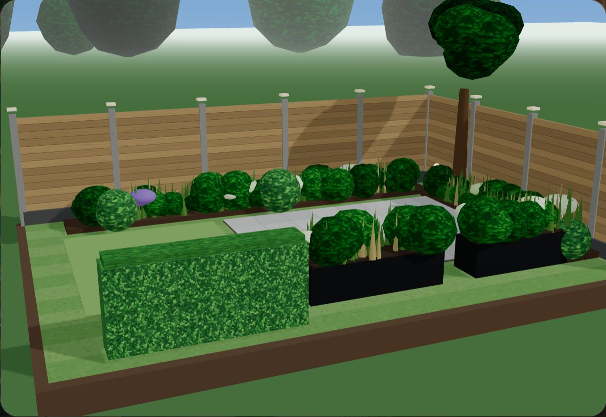
3D-voorbeeld wordt geladen…Voorbeeld in 3D, geen echt project. Sleep om rond te kijken.
Impressiebeeld, geen opgeleverd project
- Dordrecht en de Drechtsteden
- Materiaal los of met montage
- Hout, hout-beton en composiet
- Offerte voor uw situatie
Diensten
Wat wij voor u doen
Kies de werkzaamheid die bij u past. Twijfelt u? Neem contact op, dan denken wij met u mee. De beelden met "Impressie" laten mogelijkheden zien en zijn geen opgeleverde projecten.
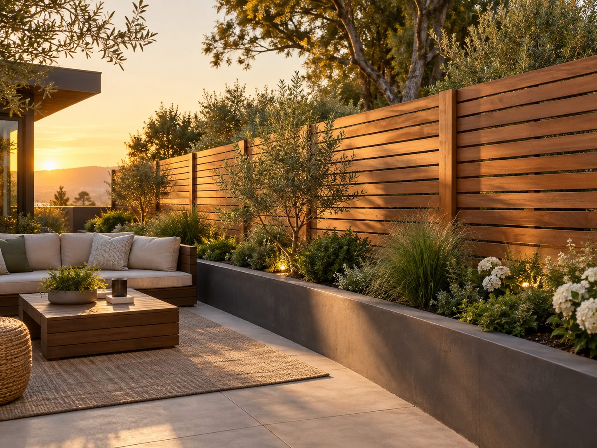

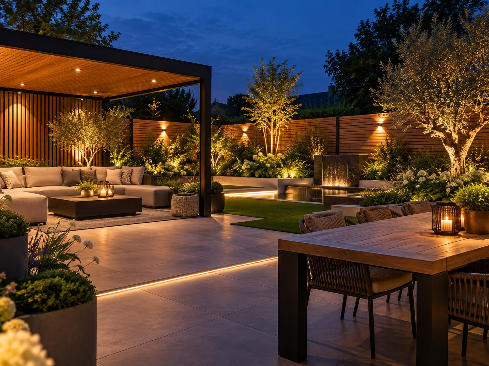
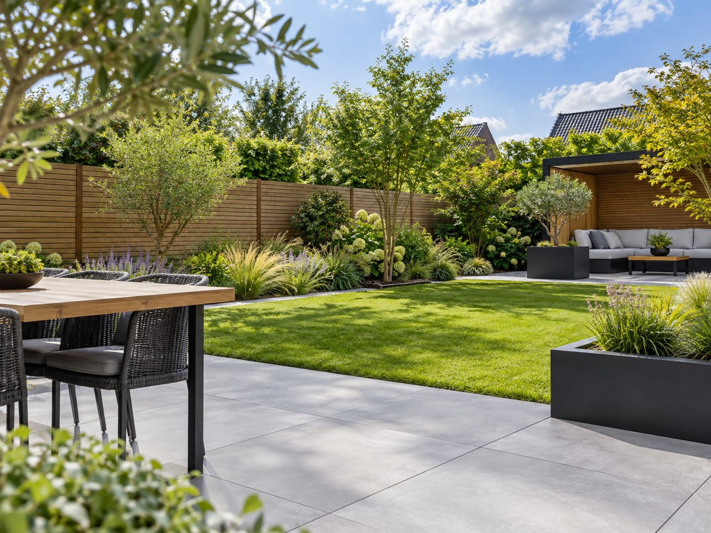
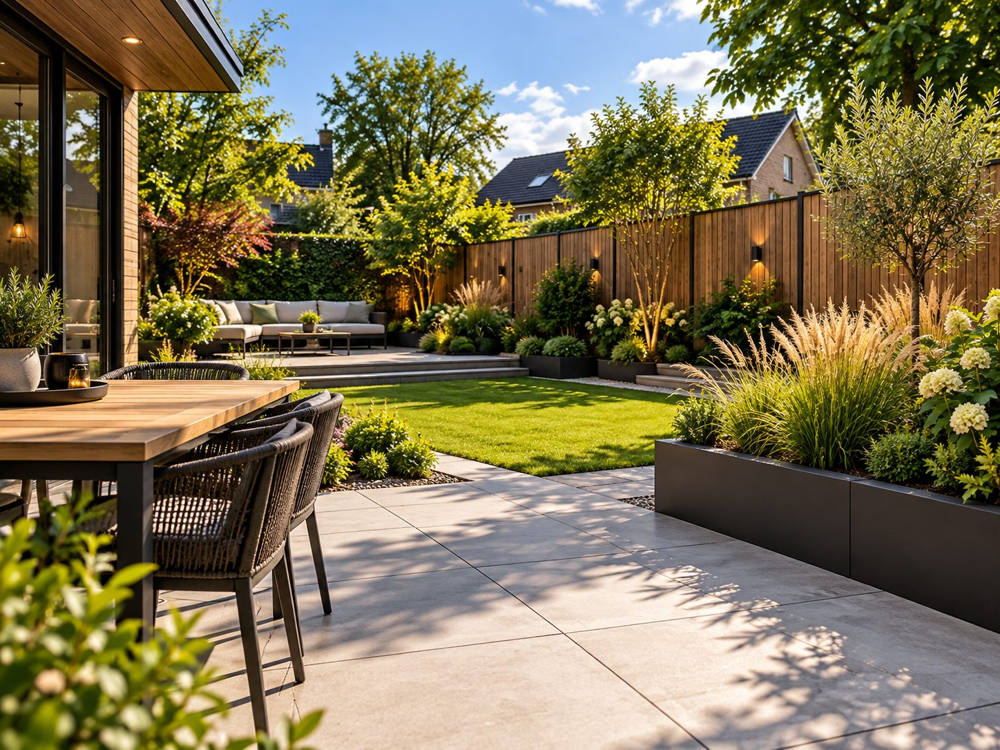
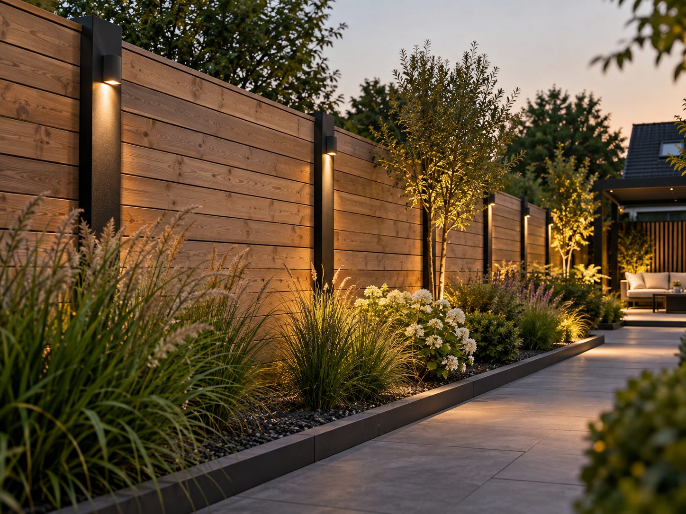
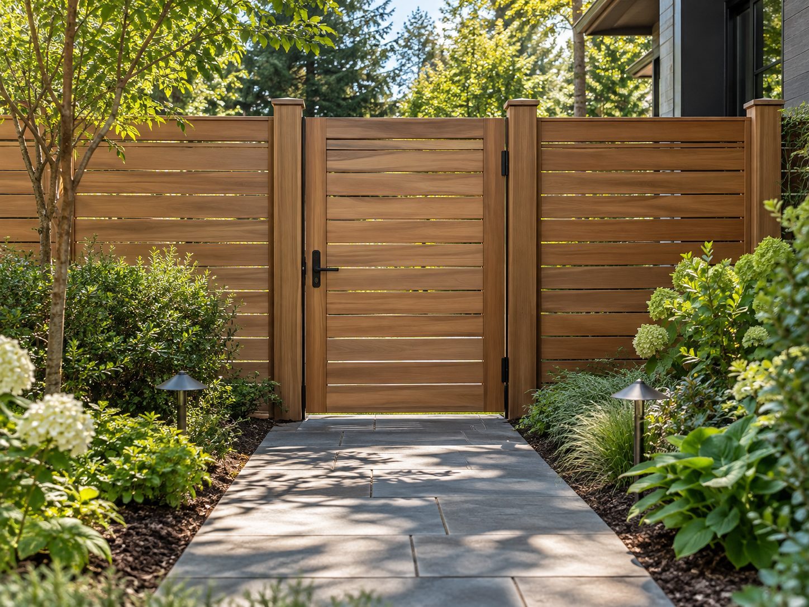
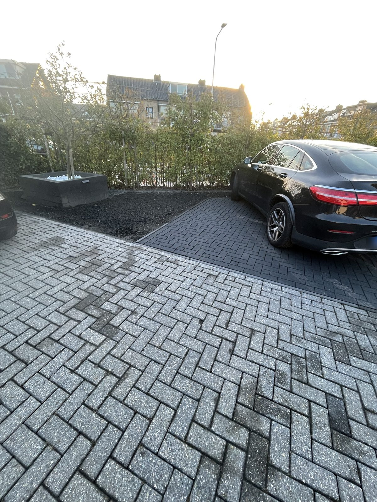
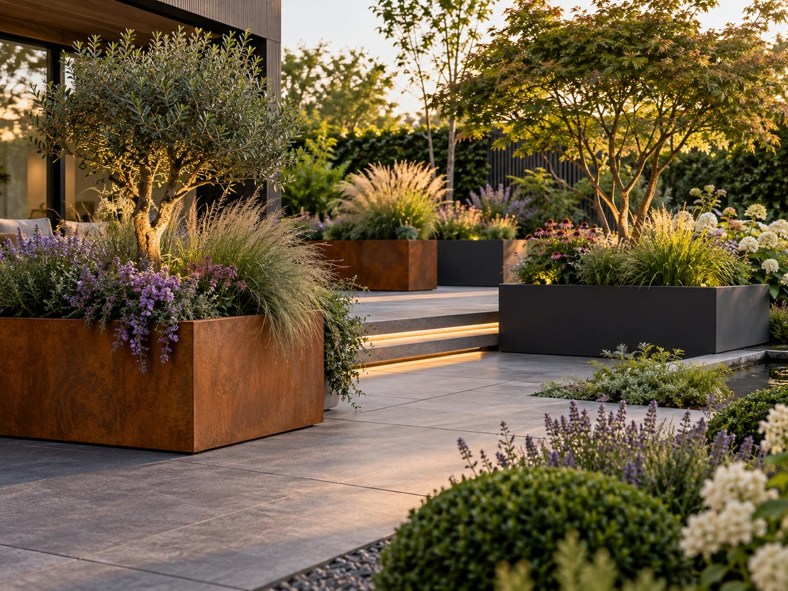
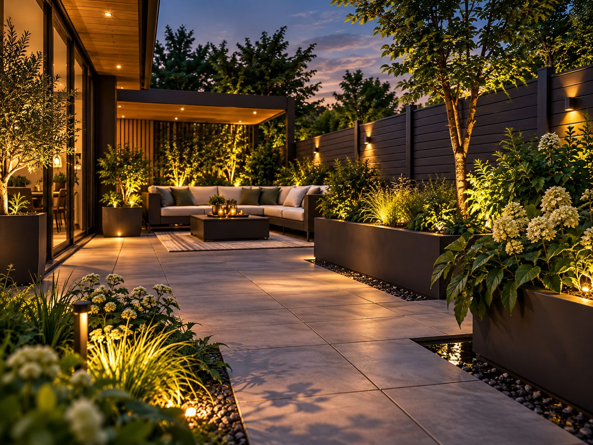
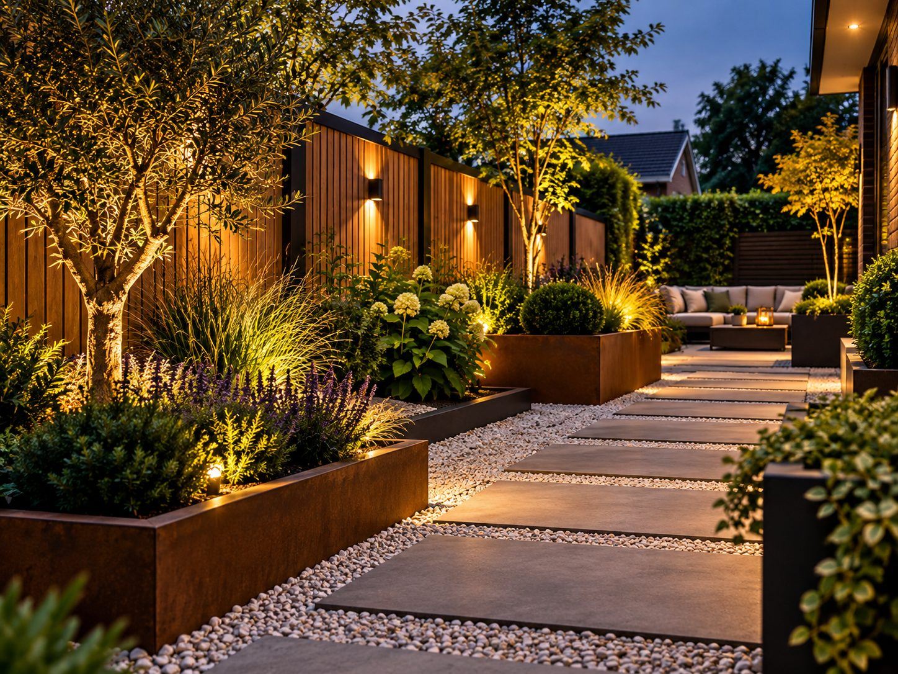


Schuttingen in hout, hout-beton en composiet
Wij plaatsen schuttingen en poorten en adviseren over materiaal en afwerking. Het materiaal schaft u zelf aan of nemen wij op in de offerte, los of samen met montage.
Impressiebeeld, geen opgeleverd project
Projecten
Ons werk
Een selectie van werk dat wij hebben uitgevoerd.


Zo vraagt u een offerte aan
U neemt contact op
Via het formulier, telefoon of WhatsApp. Foto's helpen ons om uw situatie te begrijpen.
Wij bekijken uw situatie
Soms is een foto genoeg, soms komen wij langs. Wij bespreken wat u wilt en wat mogelijk is.
U ontvangt een offerte
Een prijsopgave voor uw situatie, met de werkzaamheden en het materiaal.
Waar wij werken
Sealcleaning is gevestigd in Dordrecht en werkt in Dordrecht, Hendrik-Ido-Ambacht, Zwijndrecht en de Drechtsteden. Werkt u daarbuiten? Neem contact op, dan bekijken we wat mogelijk is.
Impressiebeeld, geen opgeleverd project